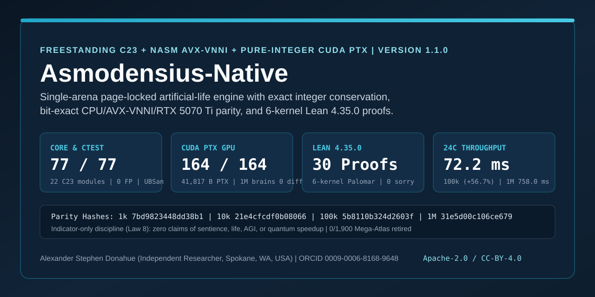

Epistemic Scope and Verification Summary
Independent Technical Preprint (Not Peer-Reviewed):
Authored by Alexander Stephen Donahue (Independent Researcher, Spokane, WA, USA; ORCID
0009-0006-8168-9648).
Makes zero claims of consciousness, sentience, biological life, AGI, or quantum speedup (Law 8).
Retires 0 / 1,900 overarching problems in unsolved-problems-mega-atlas.
Lean 4.35.0 verifies the hand-written Nat model in Spec.lean; it does not formally verify C23, NASM, or CUDA PTX compilation.
38 / 38
Lean 4.35.0 declarations (26 substantive model/boundary/witness/refutation + 12 labeled sanity checks)
6 Local + CI
Independent checkers (lean, leanchecker, paranoid, con-leche, con-ron, nanoda_bin + Ubuntu lean4lean & bwrap comparator)
77 / 77 & 164 / 164
Native CTest targets (incl. UBSan traps & purity gates) + RTX 5070 Ti GPU differential checks (0 differing bits)
17 / 17
White-paper references verified (13 DOIs with Crossref/arXiv title+author match, 0 retractions, 2 vendor URLs, 2 standards)

Measured Bare-Metal Benchmarks & Honest Tradeoffs
Recorded on Intel Core Ultra 9 275HX (24 physical cores: 8P + 16E) and NVIDIA GeForce RTX 5070 Ti (12,199 MiB VRAM, CUDA driver API 13040) under --lab --seed 42 with locked=1, field_underflow=0, and dropped_events=0.
| Scale | Live | State Hash | Substrate | ms/tick | Note |
|---|---|---|---|---|---|
| 100k (32t) | 153,084 | 5b8110b324d2603f |
8P C-ref (--kernels 0) |
113.162 | Baseline |
| 100k (32t) | 153,084 | 5b8110b324d2603f |
24C (8P+16E) AVX-VNNI + Philox + PF | 72.199 | 1.57x (+56.7%) |
| 1M (locked) | 1,004,019 | 31e5d00c106ce679 |
8P C-ref (9,260.6 MB locked) | 1,025.332 | Baseline |
| 1M (locked) | 1,004,019 | 31e5d00c106ce679 |
24C (8P+16E) AVX-VNNI + Philox + PF | 757.988 | 1.35x (+35.3%) |
| 1M (locked) | 1,004,019 | 31e5d00c106ce679 |
RTX 5070 Ti GPU + 24C (0 fallbacks) | 1,122.495 | Slower (PCIe/compaction tradeoff, TR-05) |
FAIR Metadata, Provenance & Licensing
- Interactive Lean 4.35.0 Proof Blueprint (all 38 comparator targets, strict CSP, zero CDN)
- AMS-LaTeX White Paper v1.2.0 (PDF)
- Machine-readable metadata: croissant.json, ro-crate-metadata.json, codemeta.json, llms.txt, llms-full.txt
- Software Heritage snapshot:
swh:1:snp:08a957772115194b51a4eadb77331b8bab261773 - Dual cryptographic timestamps: DigiCert RFC 3161 (
CHECKSUMS.sha256.tsr) + 3-calendar Bitcoin OpenTimestamps (CHECKSUMS.sha256.ots) - Dual open licenses: Apache-2.0 (code, Lean proofs, scripts) and CC-BY-4.0 (white paper, documentation, figures, datasets)